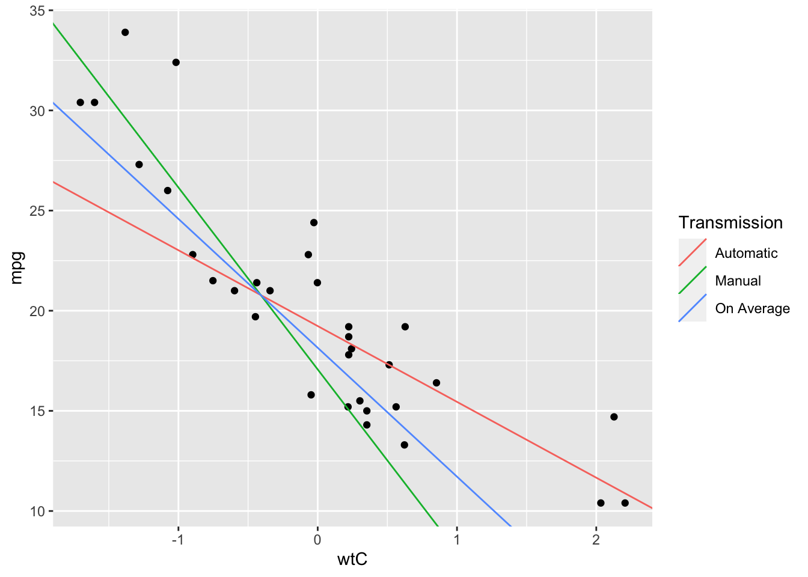

Chapter 6 Moderation
Moderation models ask the question: does the relationship between a predictor and the outcome differ based on the level of another predictor?
Let’s return to the mtcars dataset for this analysis.
mtcars %>% head() %>% flextable()mpg | cyl | disp | hp | drat | wt | qsec | vs | am | gear | carb |
|---|---|---|---|---|---|---|---|---|---|---|
21.0 | 6 | 160 | 110 | 3.90 | 2.620 | 16.46 | 0 | 1 | 4 | 4 |
21.0 | 6 | 160 | 110 | 3.90 | 2.875 | 17.02 | 0 | 1 | 4 | 4 |
22.8 | 4 | 108 | 93 | 3.85 | 2.320 | 18.61 | 1 | 1 | 4 | 1 |
21.4 | 6 | 258 | 110 | 3.08 | 3.215 | 19.44 | 1 | 0 | 3 | 1 |
18.7 | 8 | 360 | 175 | 3.15 | 3.440 | 17.02 | 0 | 0 | 3 | 2 |
18.1 | 6 | 225 | 105 | 2.76 | 3.460 | 20.22 | 1 | 0 | 3 | 1 |
We’ll focus on predicting efficienby (mpg) from weight again, but we’ll consider whether another feature of the vehicle changes the relatinoship we saw before: the transmission type. The variable am is coded 0 for cars with automatic transmissions and 1 for cars with manual transmissions. We learned about coding schemes in Section 4.4. This predictor is currently dummy-coded.
Recall that we observed a negative relationship between effiency and weight in Chapter 3. We will additionally ask: is the inverse relationship the same for cars with automatic transmissions as it is for manual transmissions?
Before we begin, let’s set up our data just how we want. I’m going to center our weight predictor around the mean so that we can interpret the intercept (and for another reason we’ll see shortly). I’m also going to set up a contrast code for the am variable, as well as the complementary dummy code.
mtcars_3 = mtcars %>%
mutate(
wtC = wt - mean(wt),
amC = -.5 * (am==0) + .5 * (am==1), # -.5 if automatic, +.5 if manual
amAuto = 1 *(am==1) + 0 * (am==1), # redundant, but I want to spell it out
amMan = 0 * (am==1) + 1 * (am==0) # the dummy code the other direction
)6.1 Mathematical Explanation
To motivate our strategy, we’ll examine some easy algebra. Here is the model we estimated when there was just one predictor:
\[\begin{equation} \widehat{mpg_i} = b_0 + b * wtC_i \tag{6.1} \end{equation}\]
Take a minute to appreciate the interpretation of that equation. It says that as \(wtC_i\) gets larger, \(mpg_i\) is also predicted to get larger. The amount by which the two are tied together in their increase is estimated in \(b\). So, the bigger \(b\) is, the stronger the relationship between \(wtC_i\) and \(\widehat{mpg_i}\).
The critical thing is that we want the \(mpg_i\) ~ \(wtC_i\) relationship, which is represented by \(b_1\), to depend on transmission bype, represented by \(amC_i\).
I’ll rephrase the point. If the relationship between efficiency and weight is encapsulated in the multiplier on weight, we want the multiplier on weight, \(b\), to be a function of transmision type.
Here’s a way to write that down in an equaion. It might look a bit funky right now, but in a moment we’ll “unfunk” it:
\[\begin{equation} \widehat{mpg_i} = b_0 + (b_1 + b_3 * amC_i) * wtC_i + b_2 * amC_i \tag{6.2} \end{equation}\]
Notice that equation (6.2) has the property we asked for: the multiplier of \(wtC_i\) in the parentheses is a function of both \(b_1\) and also \(amC_i\). In a practical sense, this means that the larger that \(amC_i\) is, the larger the slope for \(wtC_i\). The slope is now “compound,” comprised of a free parameter \(b1\) and a parameter that depends on the magnitude of \(amC_i\).
Now, let me expand the equation by distributing through the slope quantity and re-ordering the terms:
\[\begin{equation} \widehat{mpg_i} = b_0 + b_1 * wtC_i + b_2 * amC_i + b_3 * wtC_i * amC_i \tag{6.3} \end{equation}\]
This equation represents the way we will write our regressions. There are a few important features that must be present in each interaction model. First, note that both predictors of interest, weight and transmission type, have a term by themselves in the model: \(b_1 * wtC_i\) and \(b_2 * amC_i\). These are called the main effects of weight and transmission repectively. They ask useful questions. Are weight and transmission type related to efficiency, controlling for the other?
Second, the interaction term is literally the multiplication of weight, transmission type, and the parameter representing the interaction, \(b_3 * wtC_i * amC_i\). The parameter on this term, \(b_3\), will provide a statistical test of whether the relationship between weight and efficiency depends on transmission type.
Finally, notice that the equation above is completely symetrical with respect to which variable is considered the moderator and which is the “primary predictor.” That is, if we had only looked at equation (6.3) we would have no idea if the researcher was condering transmission type to be the moderator of the efficiency-weight relationship, or if weight was moderating the transmission-type-efficiency relationship. This is important: interactions are symetrical. When we build this model, we are simultaneously asking whether both whether transmission moderates weight’s influence, and whether weight moderates transmission’s influence on efficiency.
6.2 Example Model
Let’s estimate our model according to equation (6.3).
interactionModel = lm(
mpg ~ wtC + amC + wtC * amC,
data = mtcars_3
)
lmSummary(interactionModel)##
## Call:
## lm(formula = mpg ~ wtC + amC + wtC * amC, data = mtcars_3)
##
## Residuals:
## Min 1Q Median 3Q Max
## -3.6004 -1.5446 -0.5325 0.9012 6.0909
##
## Coefficients:
## Estimate Std. Error t value f value R^2 Pr(>|t|)
## (Intercept) 18.1520 0.7094 25.5862 654.6556 0.959 < 2e-16 ***
## wtC -6.4351 0.7223 -8.9085 79.3623 0.739 1.16e-09 ***
## amC -2.1677 1.4189 -1.5278 2.3341 0.077 0.13779
## wtC:amC -5.2984 1.4447 -3.6674 13.4502 0.324 0.00102 **
## ---
## Signif. codes: 0 '***' 0.001 '**' 0.01 '*' 0.05 '.' 0.1 ' ' 1
##
## Residual standard error: 2.591 on 28 degrees of freedom
## Multiple R-squared: 0.833, Adjusted R-squared: 0.8151
## F-statistic: 46.57 on 3 and 28 DF, p-value: 5.209e-11Let’s interpret the parameters we’ve seen before:
- Intercept: the average (we centered everything, so we’re ok to talk about this as the average) value of car efficiency is 18.15, and this is significantly different from 0, \(F(1,28)=654.7, p<.001\). Of course, no car woulde work if it had an efficiency of 0 MPG, so we are not surprised by this.
- Weight: as weight increases by 1 ton, our model predicts that efficiency decreases by 6.43 MPGs, holding constant transmission type. That relationship is significantly different from 0, \(F(1,28)=79.4, p<.001\). This is close to what we saw in Chapter 3.
- Transmission: moving from automatic to manual transmissions (
amwas contrast coded), our model predicts a difference in -2.17 MPG. That is, our model predicts that manual transmissions are 2.17 MPG more efficient than automatic transmissions. However, this effect did not reach significance, \(F(1,28)=2.33, p=.138\). We do not consider this a reliable effect, and so we have to reserve judgment on whether efficiency is related to transmission type.
There’s one parameter we have not seen yet: the interaction term, labelled wtC:amC in the output. The parameter shows an estimate of -5.298, and we see that it is significantly different from zero, \(F(1,28)=13.45, p=.001\). Recall that this parameter corresponds to \(b_3\) in equation (6.2), which represents the amount that weight’s effect depends on transmission type. The fact that it is significantly different from zero tells us that weight’s effect does, in fact, depend on transmission type!
6.3 Interpretting Interactions
But how does the relationship change for each tranmission type? There’s a few ways that interactions can play out. We are going to go back to one our old tricks for this: changing where zero falls for predictors.
Recall that the “compound” effect of weight in this model is this \(b_1 + b_3 * amC_i\). The implication is that when \(amC_i\) is zero, the effect of weight is just \(b_1\). Where is \(amC_i\) zero? When we contrast code it, we know that it is zero for an “average” car. In the interpretation of weight above, we looked at the weight effect just that way, and concluded that the average car shows a relationship between weight and efficiency.
But we also have ways of changing what zero means for our predictors. In the code at the beginning of this chapter, I calculated two dummy code. I’m going to re-estimate the model with the dummy code where automatic transmissions are coded zero.
int_model_auto = lm(
mpg ~ wtC + amAuto + wtC * amAuto,
data = mtcars_3
)
lmSummary(int_model_auto)##
## Call:
## lm(formula = mpg ~ wtC + amAuto + wtC * amAuto, data = mtcars_3)
##
## Residuals:
## Min 1Q Median 3Q Max
## -3.6004 -1.5446 -0.5325 0.9012 6.0909
##
## Coefficients:
## Estimate Std. Error t value f value R^2 Pr(>|t|)
## (Intercept) 19.2358 0.7357 26.1469 683.6581 0.961 < 2e-16 ***
## wtC -3.7859 0.7856 -4.8188 23.2212 0.453 4.55e-05 ***
## amAuto -2.1677 1.4189 -1.5278 2.3341 0.077 0.13779
## wtC:amAuto -5.2984 1.4447 -3.6674 13.4502 0.324 0.00102 **
## ---
## Signif. codes: 0 '***' 0.001 '**' 0.01 '*' 0.05 '.' 0.1 ' ' 1
##
## Residual standard error: 2.591 on 28 degrees of freedom
## Multiple R-squared: 0.833, Adjusted R-squared: 0.8151
## F-statistic: 46.57 on 3 and 28 DF, p-value: 5.209e-11There are two parameter interpretations we neeed to change. Notice that the interaction term and the amAuto term have exactly the same magnitudes as in the original model. That’s because changing the zero point of am does not affect those terms, but it does affect the slope for weight and the intercept.
- Intercept: For cars with automatic transmissions and average weight, the model predicts an efficiency of 19.2 MPG (still significantly different from zero).
- Weight: for cars with automatic transmissions, the model predicts that car efficiency decreases by 3.78 MPG for every 1 ton weight increase, \(F(1,28)=23.22, p<.001\). This relationship is significant for cars with automatic transmissions.
We have a way to focus our model on a particular kind of car! Let’s focus it on cars with manual transmissions.
int_model_man = lm(
mpg ~ wtC + amMan + wtC * amMan,
data = mtcars_3
)
lmSummary(int_model_man)##
## Call:
## lm(formula = mpg ~ wtC + amMan + wtC * amMan, data = mtcars_3)
##
## Residuals:
## Min 1Q Median 3Q Max
## -3.6004 -1.5446 -0.5325 0.9012 6.0909
##
## Coefficients:
## Estimate Std. Error t value f value R^2 Pr(>|t|)
## (Intercept) 17.068 1.213 14.068 197.907 0.876 3.21e-14 ***
## wtC -9.084 1.212 -7.493 56.142 0.667 3.68e-08 ***
## amMan 2.168 1.419 1.528 2.334 0.077 0.13779
## wtC:amMan 5.298 1.445 3.667 13.450 0.324 0.00102 **
## ---
## Signif. codes: 0 '***' 0.001 '**' 0.01 '*' 0.05 '.' 0.1 ' ' 1
##
## Residual standard error: 2.591 on 28 degrees of freedom
## Multiple R-squared: 0.833, Adjusted R-squared: 0.8151
## F-statistic: 46.57 on 3 and 28 DF, p-value: 5.209e-11- Intercept: cars with manual transmissions and average weight are predicted to have efficiency of 17.07 MPG (signficantly different from zero).
- Weight: cars with manual transmissions are predicted to decrease in efficiency by 9.08 MPG for every 1 ton increase in weight, \(F(1,28)=56.14, p<.001\). The relationship between weight and effiency for cars with manual transmissions is significant.
In fact, using the slopes from those two models (but keeping the intercept from the first model), I can put lines on a graph that represent these trends:
## ggplot likes to have dataframes for things, so I contruct one here with the
## slopes and intercepts I want
plotTbl <- tribble(
~ Transmission, ~ int, ~ slp,
"Automatic", 19.2358, -3.786,
"Manual", 17.068, -9.084,
"On Average", 18.15, -6.435
)
# Intercepts come from the "on average" model, and then we use the different
# slopes estimated for the different groups
mtcars_3 %>%
ggplot(
aes(x = wtC, y = mpg)
) +
geom_point() +
geom_abline( # automatic transmisions
aes(intercept = int, slope = slp, color = Transmission),
data = plotTbl
) 
Now we can see that the plot confirms our interpretations. The red line, representing cars with automatic transmissions, shows a weaker relationship (flatter slope) between weight and efficiency than the green line, representing manual transmissions. Averaging those in the blue line shows a slope somewhere in between.
Running the two models with dummy codes is known as exploring simple effects. Here, we explored the simple effect of weight on MPG for each transmission category separately.
6.4 Extension to Continous Moderators
The really powerful thing about using regression for this analysis is that we do not need to care so much about whether our predictors are categorical or continuous. In most introductory statistics courses, it is taught that you can have categorical variables interact with an ANOVA. If you have a variable that is continuously valued and one that is categorical, then you need “ANCOVA.” But I’ll claim here that these are all actuall the same model. ANOVA is exactly equivalent to contrast-coding predictors and entering them in a regression, with two main effects and an interaction term. ANCOVA is what we just did in this example.
Finally, it is not a problem to allow two variables, both continuously valued, to interact! We do need to think about where zero is in the same way as before. So, mean center your predictors, and enter them in the model just like we did above. To explore the simple effects, we conceptually do the same thing, but we can’t construct dummy codes for continuous variables. Instead, it is common practice to center one of the interacting variables at 1 standard deviation above the mean, and then again at 1 standard deviation below the mean. Then, estimate the simple effects models like I estimated the dummy-coded ones here. Interpret accordingly!